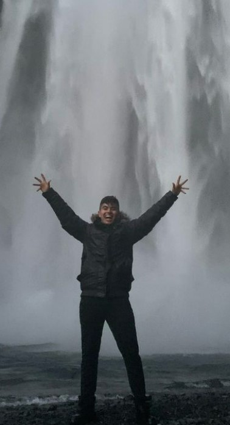

Sumer Sen, from Queens, NYC
Brooklyn Technical HS

How we met: Sumer and I rushed for the same business fraternity—Alpha
Kappa Psi, together Fall of 2019—we were a part of the same pledge class (go
etas!), and we became a part of the same AKPsi family because our bigs (his
is Chris Lally & mine is
Ryan Laverty) are best friends.
Why Sumer inspires me: Sumer is a special guy, I really consider him
to be family. I am so grateful to have met him so early in my college life
because even though we weren’t extremely close freshman to junior year, the
people we have individually grown into through college and abroad, has made
us even closer now. Sumer is one of the most mature, kind, funny, energetic
but zen, intelligent, well-rounded, and hard-working people ever. He is
curious and leans into passions, interests, and experiences that genuinely
make him feel alive: this is something that everyone in his life is inspired
by because he balances life and work while always having fun. He loves
physical activity, working out, boxing, and cycling, he delves into his
creative side, dancing, videography, and rapping, and he is committed to
learning and pushing himself personally and professionally. He told me how
his past internship at Microsoft was one of the most challenging experiences
ever; he said that when he was getting feedback or projects from his boss he
would do box breathing techniques because of how difficult and demanding
everything was. But this is how Sumer lives life, constantly pushing the
boundaries for himself and it is a great energy to be around. He has a
vision of where he wants to be, who he wants to be, and what he will be
doing in the future. Having a friend who has such a clear picture of the
growth he wants to be doing now in order to be a person not only he is proud
of, but his family is proud of is motivating and refreshing. This ambition
in combination with his genuineness and kindness makes Sumer, Sumer. This is
what makes him magnetic, and the perfect leader, friend, and person.
Dec 2022 What is Sumer up to: Sumer’s proudest high
school accomplishment was founding the stock market club with his hometown
best friends. They got invited to the trading floor of the New York Stock
Exchange after the great success of his club in stock trading competitions.
After highschool, Sumer got into Babson College where he was a part of
E-tower and Code. He has been a brother in Alpha Kappa Psi for 4 years, and
he is now the President of AKPsi! His big Chris Lally was the president of
AKPsi our freshman year, so he was inspired to follow his mentors footsteps
and make him proud, a very wholesome full circle moment. Last semester, he
went abroad to Singapore and studied at SMU (Singapore Management
University) during Spring 2022, this is where he got deep into cycling and
muay thai boxing. Sumer worked as a Product Manager at Microsoft the summer
after Singapore, and he will return to Seattle, WA post-grad in May 2023 to
be a full time PM at Microsoft. Sumer will audition for Babson’s Dance
Ensemble next year for his last semester and I am coaching him. He also has
started a side project called Sen Studios with the mission
statement “Play Redefined”; so far me (Director of Movement),
Fatima (Creative Director), and Nick Cho (Visual)
are on the e-board for his creative endeavor. His 1st project was his
Iceland Vlog of
our friend groups 5 day trip, his 2nd project was a painting him and Nick
Cho bid and sold for $42 - titled “The Internet Killed Me” (pictured below), and he has other
projects are in the works…Sumer and I will also be running the Ipswich Half
Marathon together in April 2023 - this will be another Sen Studios video
project in the making.
Hobbies:
- Cycling
- Videography
- Muay Thai & Boxing
- Working Out, Bulking atm
- Dancing
- Freestyle Rapping
- Adventuring & Traveling
- Fashion, polishing his aesthetic
Top 3 memories:
- Costa Rica 2019
- Fam Nights @ Lally’s
- Iceland 2022 + the Beginning of Sen Studios
Sumer's Dreams:
“I dream of having lifelong friends, a beautiful wife,
3 healthy kids, lots of money, and memories that take my breath away.”
I
have absolutely no doubt Sumer Sen will be a multi-millionaire living the
dream life he is working for now.